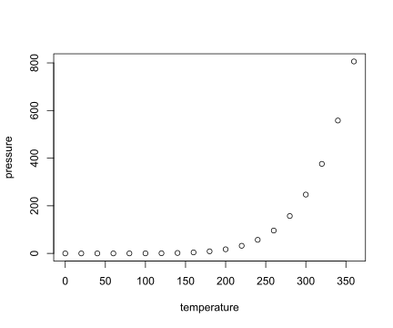

This is an R Markdown format used for publishing markdown documents to GitHub. When you click the Knit button all R code chunks are run and a markdown file (.md) suitable for publishing to GitHub is generated.
You can include R code in the document as follows:
summary(cars)## speed dist
## Min. : 4.0 Min. : 2.00
## 1st Qu.:12.0 1st Qu.: 26.00
## Median :15.0 Median : 36.00
## Mean :15.4 Mean : 42.98
## 3rd Qu.:19.0 3rd Qu.: 56.00
## Max. :25.0 Max. :120.00You can also embed plots, for example:

Note that the echo = FALSE parameter was added to the code chunk to prevent printing of the R code that generated the plot.
$$\bar{X}=\frac{1}{n}\sum_{i=1}^nX_i \alpha_i$$
\(\sum_{i=1}^n X_i\)
x <- rnorm(100)
y <- 2*x + rnorm(100)
cor(x, y)## [1] 0.9064497There are 150 individuals.